This is a 3D model I created in Blender. First I was inspired when I came up with a concept for a cartoon character and drew it on paper. After that I sent it to my friend to turn it into concept art.
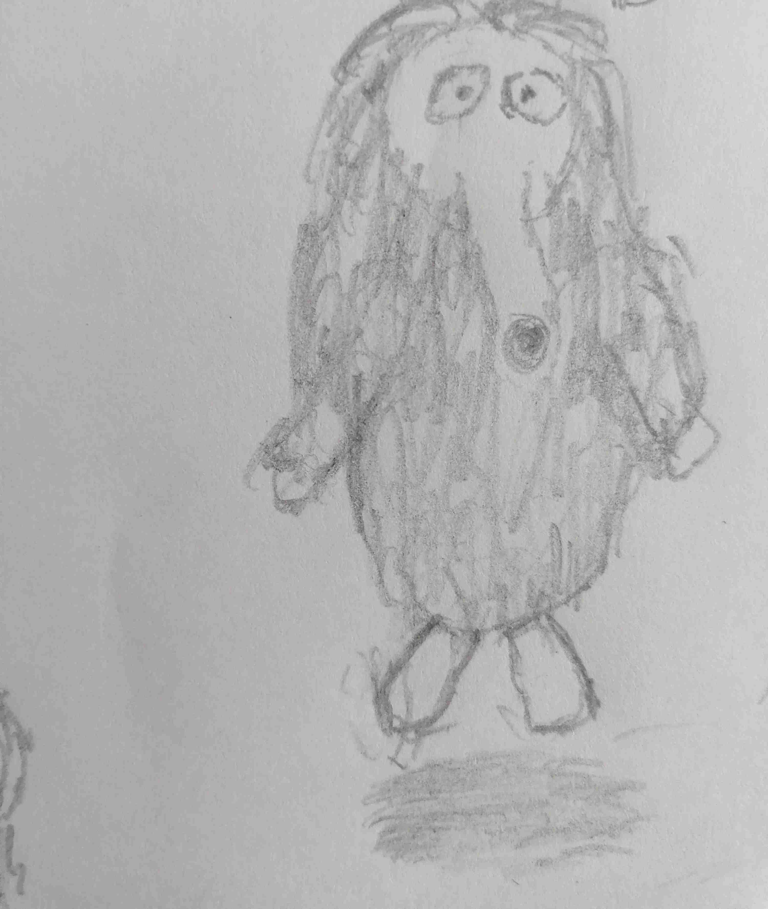
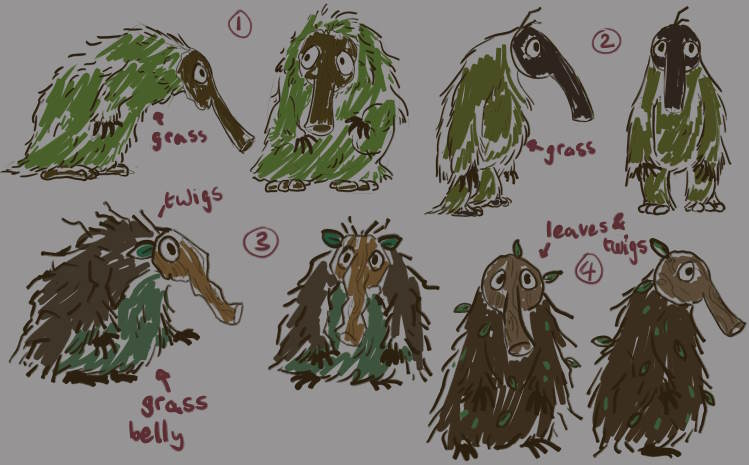
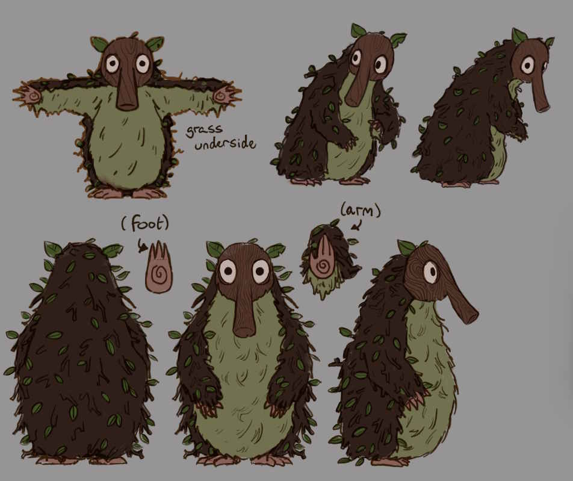
I used the final concept art as a reference to build the basic shape in Blender. I also modelled some twigs.
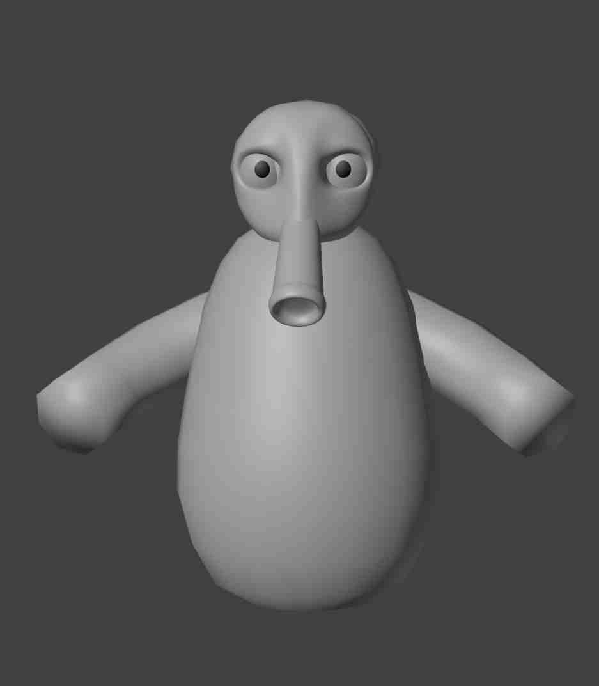
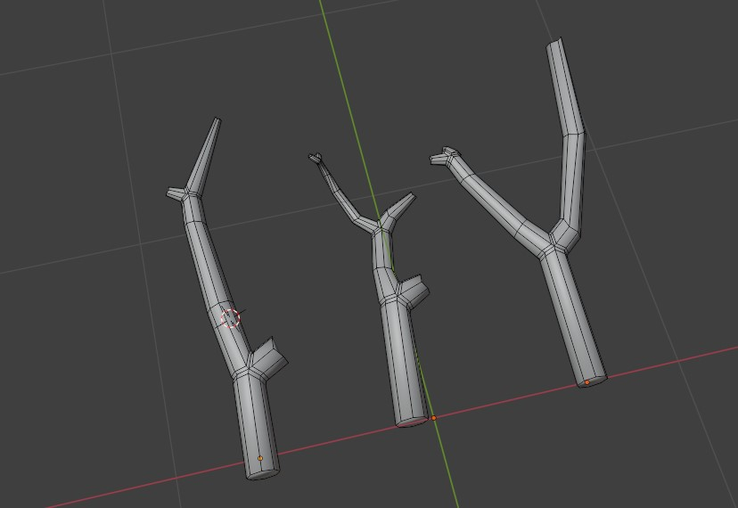
After that I painted some leaves in Photoshop. These are going to be placed on the creature.
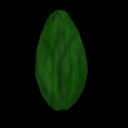
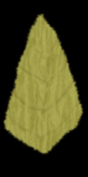
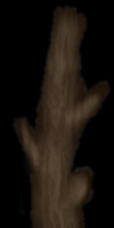
Then I used a geometry node network to position the leaves and twigs over the body of the creature.
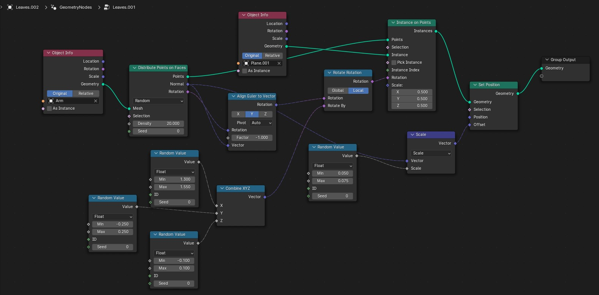
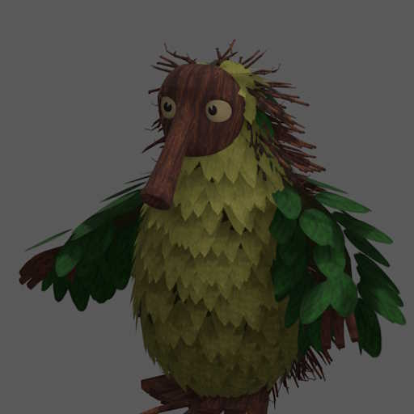
For the final render I used Substance Painter to add a wood texture to his mask.
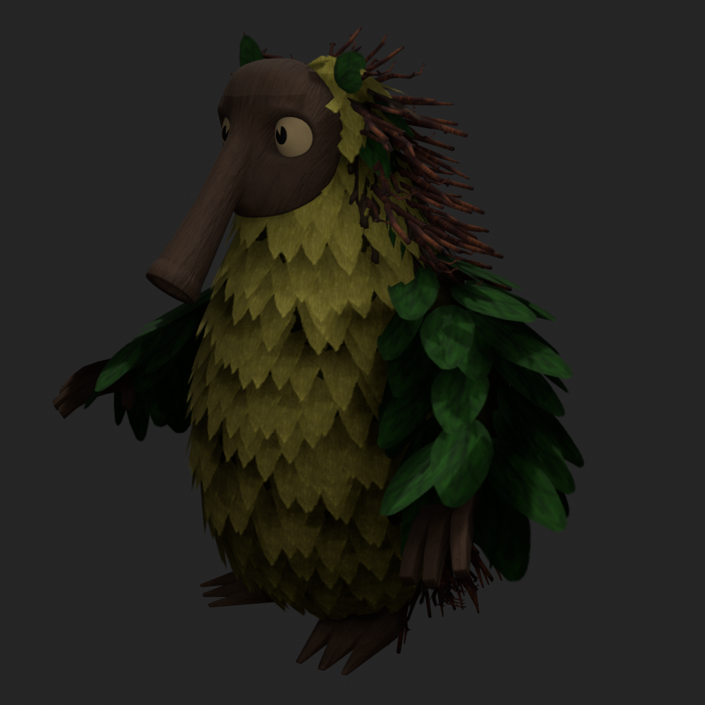
This can also be viewed on my Artstation